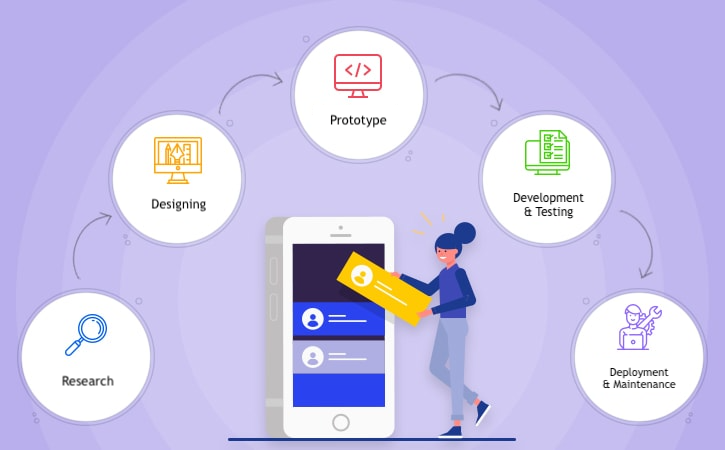

How to Develop a Custom Mobile App for Your Business?
In the modern era, regardless of your financial status, everyone can afford a smartphone. That means everyone from every walk of life is a potential client. A mobile application allows you to reach a bigger target audience with ease. Yeah, it’s that easy!
You could be planning to change the internal process of your business, looking to expand your organization’s presence in the market, or working for a new idea, which can help transform your business and the world. To achieve this, you merely need to build a custom mobile application that can help you accomplish your objectives efficiently and effectively. Needless to say, your mobile app should be user-friendly and easy to navigate. And, voila! You’ve done almost half the work you need to succeed.
Why do you need Custom Mobile Applications?
To make a top-notch, bug-free, and flawless mobile application, you need a framework design that is efficient and has good coding. A good software developer will help you select the most suitable platform for your mobile application that would guarantee your clients get the remarkable experience they anticipate.
Platforms on which a Mobile Application works:
Android: You can develop rich and instinctive mobile applications, which are developed on languages like Java or Kotlin.
iOS: You get a powerful and versatile mobile application that is developed on programming languages like Swift or Objective-C.
Cross-Platform : Make mobile applications that can be used on different platforms at the same time using the most advanced coding language React Native or Flutter.
Five ways in which mobile applications can help business
1. Enhances your client’s value: Client commitment is the main part of client relations, collaborations, and exchanges. When somebody searches for your goods or services, it’s crucial to keep the individual locked in. You should expand your connection with the clients for the better advancement of deals. So how does a mobile application fit in here? Starbucks’ mobile application is one of the best examples when it comes to understanding successful digital engagement. It’s easy to understand with great user experience, loyalty programs that are engaging and motivating, and easy payment and ordering system, and more.
2. Brand building: Previously, brands used to publicize their products through banners, boards, and hoardings. Organizations engrave their image logos on such keepsakes to build their brand image. Today, a mobile application is equipped to deliver all this and more. A mobile application can advance brand mindfulness and acknowledgment among clients and be a powerful correspondence channel. By consistently allowing you to connect with your target group, you can procure client trust. A customized mobile application can help your clients understand your brand image, your brand value, and draw in them adequately. The more they pay attention to you and your attempts to sell something, the more they will focus on your image.
3. Improves sales: You can include different loyalty programs in your mobile application. It will cause your clients to return to your store (computerized/physical) and invest more money and time. Offering rewards ) through such loyalty programs allows the clients to invest more money in the business and helps in brand acknowledgment.
Gamification is another way by which you can earn client recognition, winning clients confidence in your brand, and offering discounts and other promotional offers to pique their interest in your brand. Scratch-and-win is another component that can help raise commitment among clients.
4. Improves proficiency: Coordinated shopping baskets with food ordering and planning permits the business to include different functionalities like creating a strong digital footprint within their application. For example, if a diner combines an online food requesting framework inside its application, it will most probably witness a substantial growth in web and in-application requesting. Essentially, if a retail business teams up with an online business framework, it’s anything but a useful development and in the end, generally speaking, deals. With mobile applications, organizations can upgrade client commitment with inbuilt booking programming that informs clients about the timetable.
5. Create a reliable client base: Having a reliable client base is basic for any business. A mobile application is probably the most ideal approach to draw in with clients and make a steadfast client base. An application permits clients to connect with your business whenever the timing is ideal. With reference programs, you can urge your customers to allude to your items or administrations to other people.
Applications of a Custom Mobile App
If you still have doubts about how a custom mobile application can be useful for your business, then let us make this even more clear:
Inform clients about your new offers and items Connect with younger crowds Add analytic features if required to track sales and growth. Have customized UI and interface to craft tailor made and relevant experience for your target audience. Helps you stay ahead of your competitors
Process of Mobile Application Development
1. Conducting the Research: The first step of mobile application development is creating a plan, understanding the target audience, zeroing in on the features and the life-cycle of the application software. Other than fusing the brand into the plan while developing the mobile application, the engineer should understand the difference between how individuals will be using the mobile site and how they will be using the mobile application. Next, the software developer along with his team will build a plan to make the client understand how the proposed application will work on different interfaces, platforms, and devices.
2. Designing: The purpose of this step is to drive quality user experience and connect users with the app. Creating a design helps improve its engagement rate, encourages user adoption and interaction. The first step to design is to understand information architecture and workflows. In simple terms, determine the type of data it will collect from users as well as offer them. They also help create workflow diagrams which will chart out the app’s navigation pathway for the users. Post determining the workflows, wireframes come into the picture. Wireframes digital sketches of an app, complete with layouts and mockups to give a structural as well as aesthetical identity to the app. Once the wireframes are completed, different mockups are created to be shared with the app owner. Different styles and options allow the scope for improvement and modification, if any.
3. Creating a prototype: A prototype may be unpleasant in the beginning. It is filled with bugs and execution issues, but that’s just the beginning of a beautiful journey of your custom mobile application. From start to end, the software developer creates a prototype to give you an idea how the application will look like, how the information will be displayed, and how your customers will be receiving it. Once that process is done. That application is released for beta testers for issues.
4. Development : The main purpose of the development process is making sure that the clients have the best user experience. Both the planning and development start almost immediately in the process; it must be appropriately done once the research has been conducted and a prototype of the application has been developed.
5. Testing: Once the application has been planned and created it should be tried for bugs and pre-deployment issues before being delivered in full. A test variant of the application can be delivered to the crowd and input can be looked for. If there are any issues it very well may be costly to fix them later once the application has been delivered. Along these lines, mobile application developers ought to fix these issues and bugs in the testing stage.
6. Making application live: The last step that mobile application designers need to take when it comes to the mobile application process is making it live. Anyway once the application is being downloaded and used by your clients, you need to watch out for feedback, which is an essential part of the mobile application development process. The mobile application developer should be prepared to address every one of the feedback and fix what isn’t right with the application. 
Conclusion:
Application development is a long-term process that does not end with deployment. To make sure your clients are happy and getting the best from your application, you need to learn how to handle client criticism and feedback and use them in a way in which you can improve your application while also improving your relationship with your clients.
Throughout the long term - mobile application development and deployment - you have to understand different aspects of the mobile application dependent, which involves finances, designing, distribution, and feedback. By following this mobile development process, not only will you have a mobile application that fulfills your client’s needs but will also be fruitful and helpful in expanding your business.